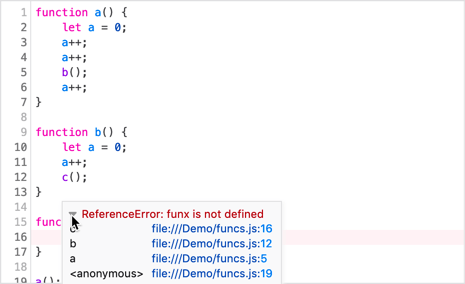

When an exception occurs, the line where it occurs is highlighted in the source pane, with a squiggly red line under the problematic code. A tooltip describes the exception. Starting in Firefox 80, a disclosure triangle within the tooltip reveals a stack trace.
